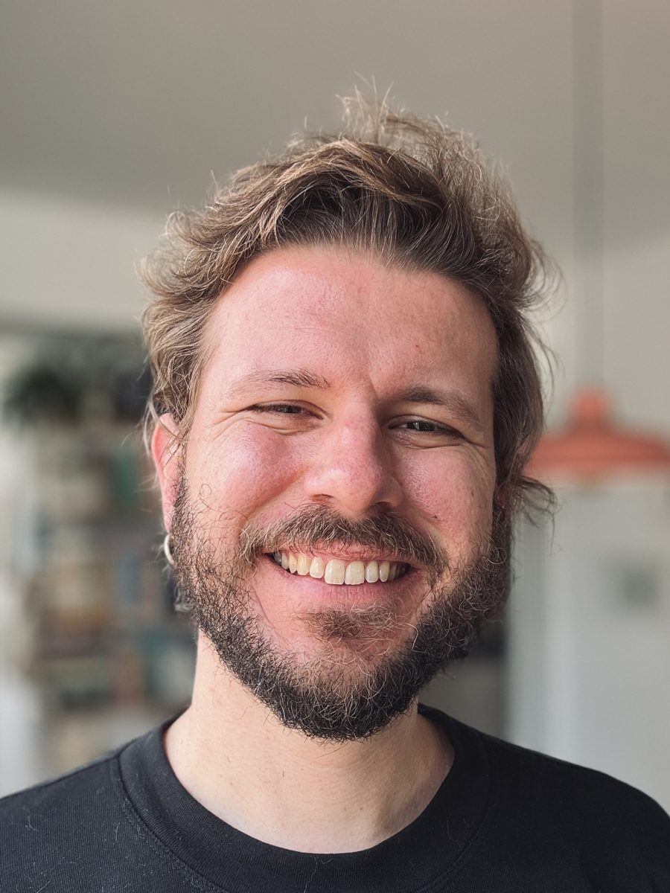

Bruno Lorenz
Pinto em aquarela a arquitetura de todo dia: predinhos, casas de esquina e fachadas que contam a história de quem mora nelas. Meu trabalho é uma espécie de documentação afetiva da arquitetura popular brasileira, e publico tudo como @unspredinhos.
Além de pintar, ensino. Dou aulas de Processos Criativos e oficinas de desenho para crianças, jovens e adultos.
Pintar, ensinar e andar pela cidade
Aquarela
Pinturas originais e reproduções de predinhos, casas e prédios históricos. Também pinto sob encomenda: a casa de alguém, o prédio de uma família, a esquina de um bairro.
Projetos de longo fôlego
Séries que duram meses ou anos e cobrem um território inteiro: um predinho por dia durante 2026, um predinho para cada município do Rio Grande do Sul.
Educação
Aulas de Processos Criativos e oficinas de desenho de observação em escolas, feiras, museus e cidades do interior, com pessoas de todas as idades.
Séries que viraram mapa
Predinho do Dia · 2026
Um predinho por dia, durante um ano, sempre numa rua com o nome daquela data. Do Rio Grande do Sul ao Acre, um zigue-zague de — mil km pelo calendário.
Conhecer o projetoDesenhando o RS
Um predinho em aquarela para cada um dos 497 municípios gaúchos, com um mapa interativo que vai se completando. O projeto me levou a escolas, feiras e exposições pelo interior do estado.
Galeria Uns Predinhos
Todas as aquarelas num lugar só, para olhar com calma e escolher a sua.
Ver a galeriaOficinas e exposições
Cada projeto acaba virando conversa com quem mora nos lugares pintados.
- 2025
Veranópolis
Dois dias na Feira do Livro, com mesas abertas de aquarela e desenho para crianças e pais.
- 2025
Restinga Seca
Apresentação do Desenhando o RS e uma oficina de desenho de cerca de duas horas.
- 2026
Rolante
Exposição com dez aquarelas da cidade e oficinas pela manhã e à tarde com alunos da rede pública.
- 2026
Dois Irmãos
Oficina com estudantes de escola pública no Dia do Patrimônio.
- 2026
Porto Alegre · Fundação Iberê Camargo
Desenhando no Museu: um encontro para desenhar juntos no Iberê.
Quer levar uma oficina para a sua escola, feira ou cidade? Dá para pintar a cidade e conversar com crianças e jovens sobre memória, patrimônio e o lugar onde vivem.
Convidar para uma oficinaFora da aquarela
Como podemos trabalhar juntos
Encomendar uma pintura
Monte o seu orçamento on-line, com tamanho e detalhes.
Fazer orçamento →Oficinas e palestras
Para escolas, feiras, museus, empresas e prefeituras.
Chamar no WhatsApp →Imprensa e parcerias
Entrevistas, curadoria, editais e projetos com marcas.
Chamar no WhatsApp →Os predinhos novos, os bastidores e as lives de desenho.
@unspredinhos →